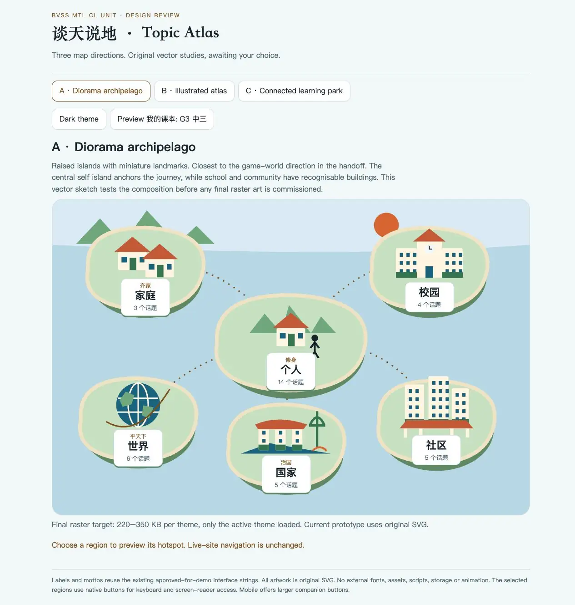
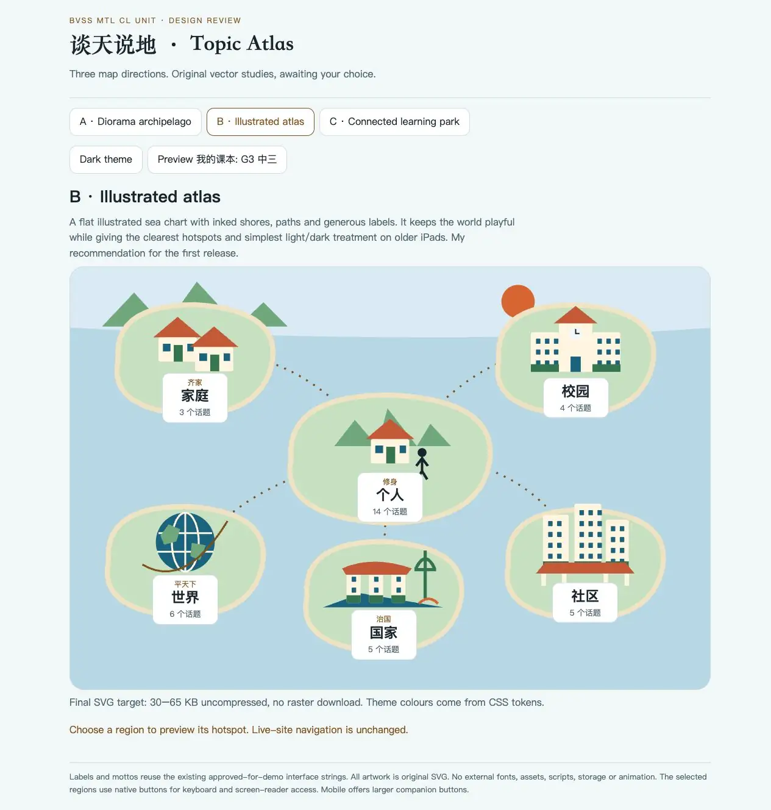
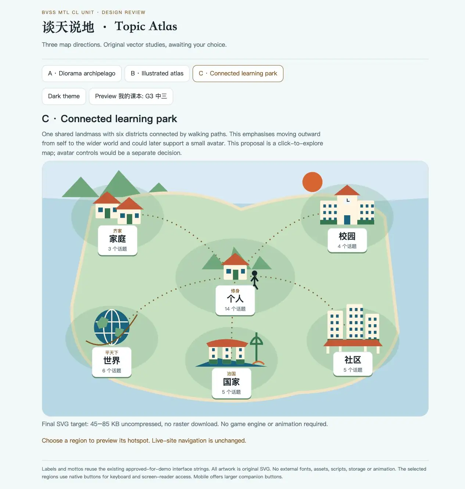
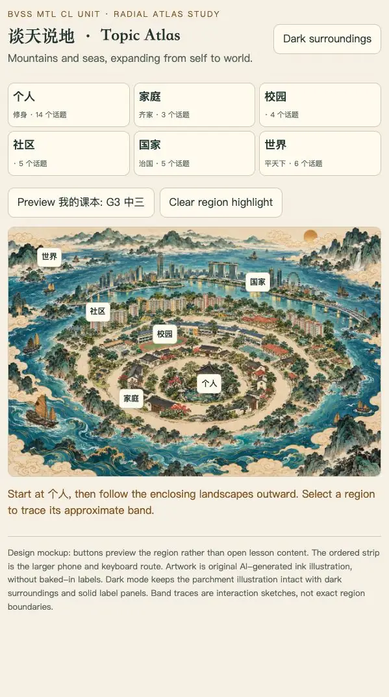
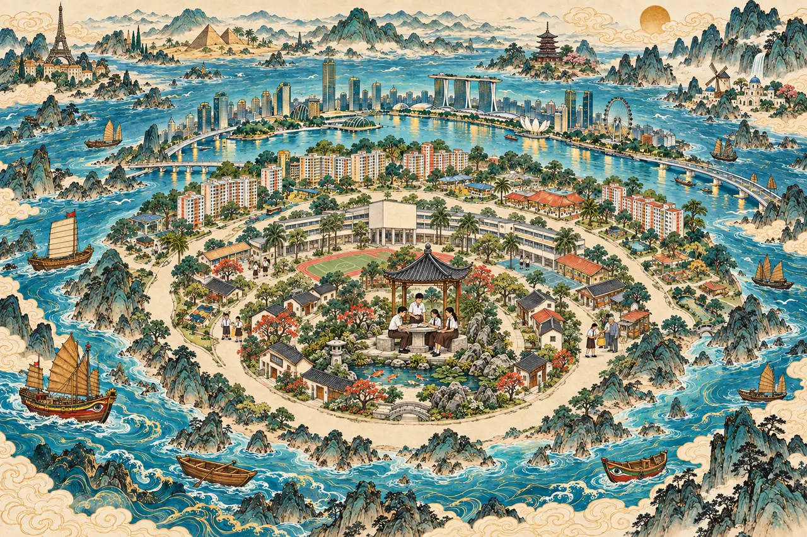
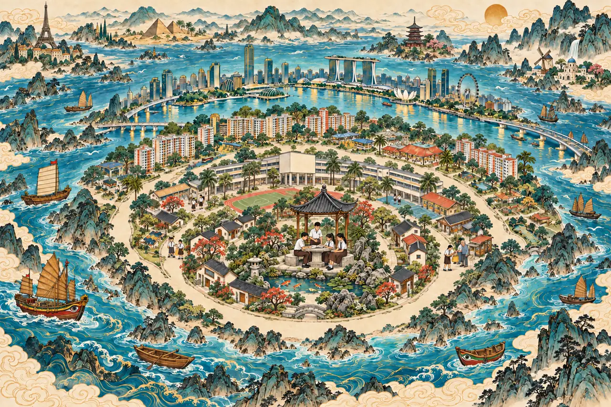
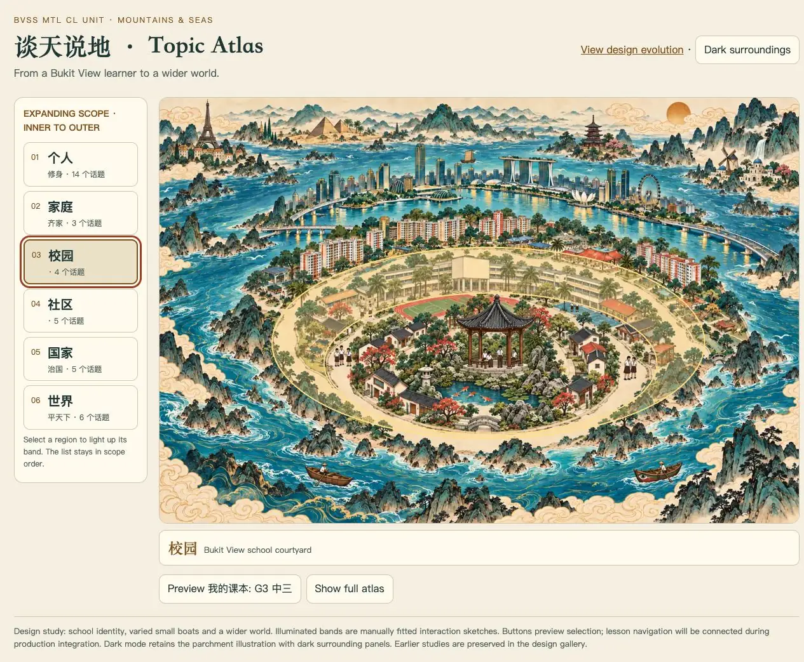
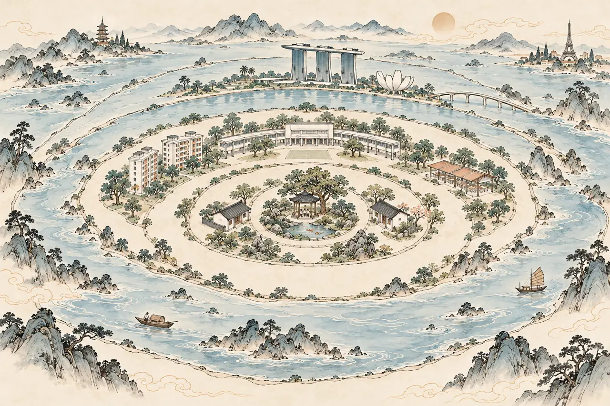
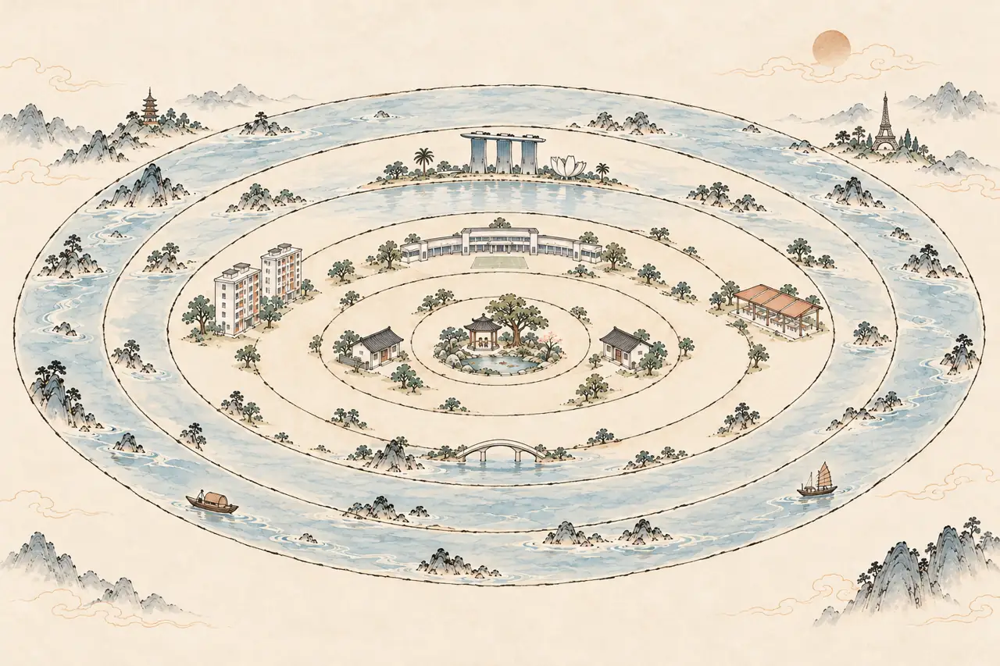

A preserved record of working designs, proposals and rejected iterations. Source snapshots and compact previews live in the graphics branch. Full-resolution generated masters remain in the local sandbox. The production homepage is unchanged.
STAGE 00Claude original SVG
Simple ellipse islands established working region navigation. Frozen original homepage, captured from unchanged production source at a5b24a5.
Open preserved stageSTAGE 01ARaised island study

First Codex study: miniature landmarks on raised islands.
Open preserved stageSTAGE 01BIllustrated atlas study

Flat shorelines and clearer region landmarks.
Open preserved stageSTAGE 01CConnected park study

One connected landscape tested movement between districts.
Open preserved stageSTAGE 02Radial mountains and seas

Owner direction: Shan Hai Jing-inspired ink illustration, nested scope from personal to world.
Open preserved stageSTAGE 03Bukit View identity draft

Uniformed students, facade, foreign landmarks and varied boats. Rejected scale: students and boats too large. Preserved as an intermediate, not a final design.
Open preserved stageSTAGE 03BUniform hair detail study

Hair-detail correction was generated while perspective feedback arrived. Superseded by the smaller-scale version; preserved as an intermediate.
STAGE 04Perspective and ring interaction

Smaller pavilion figures, fewer boats, ordered navigation and illuminated bands. Superseded by the pale ink study.
Open preserved stageSTAGE 05ADesaturated ink study

Reduced colour and detail, with a much smaller central shelter. Ring separation still needed refinement.
STAGE 05BConcentric structure study

Clearer nested outlines; community landmarks still sat inside the school band.
STAGE 05CPale ink concentric atlas
Linework leads, watercolour stays pale, landmarks are sparse and the six scopes are distinct. Current review candidate.
Open current study Archive convention: dated filenames, no overwriting a reviewed version, rationale and provenance recorded alongside each stage. Git records source changes; this gallery makes the visible changes easy to inspect.